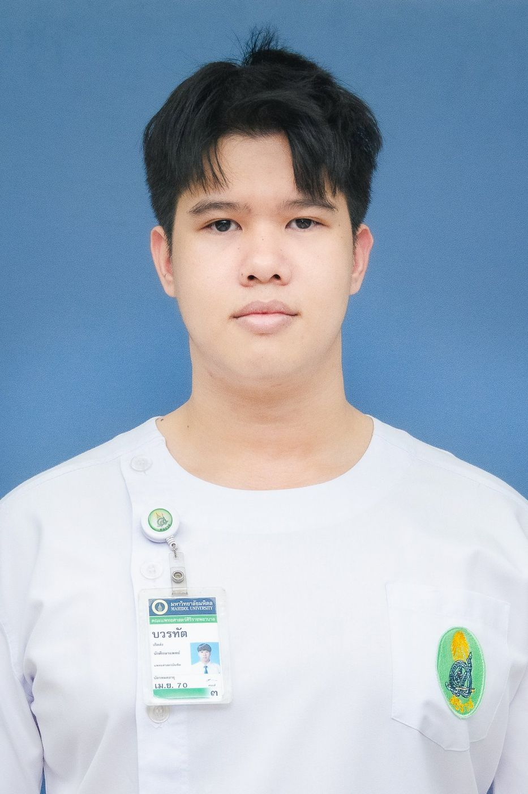

บวรทัต เกิดส่ง / Bowornthat Kerdsong
Bowornthat Kerdsong / บวรทัต เกิดส่ง
ประวัติส่วนตัวโดยสังเขปCURRICULUM VITAE
นักศึกษาแพทย์ชั้นปีที่ 6 คณะแพทยศาสตร์ศิริราชพยาบาล ตั้งเป้าเป็นอาจารย์ศัลยแพทย์ สาขาที่สนใจเรียนต่อเป็นอันดับแรกคือ Cardio-Vascular-Thoracic Surgery (CVT) แม้ประสบการณ์งานวิจัยที่ผ่านมาจะอยู่ในสาย General Surgery โดยเฉพาะ Hepato-Pancreato-Biliary (HPB) ข้าพเจ้าตั้งใจใช้ช่วงใช้ทุนสะสม operative และ clinical exposure อย่างต่อเนื่อง เพื่อตัดสินใจเลือกสาขาอย่างมีข้อมูล โดยยังเปิดรับ subspecialty อื่นทางศัลยกรรมด้วย
Final-year medical student at Siriraj Hospital working toward an academic career in surgery. My primary training interest is cardio-vascular-thoracic surgery; despite my research experience which lies in general surgery, principally hepato-pancreato-biliary disease. I intend to resolve that divergence through sustained operative and clinical exposure during my service years, with other surgical subspecialties also under consideration.
สาขาที่สนใจ
SPECIALTY INTEREST
Elective ที่ รพ.ธรรมศาสตร์เฉลิมพระเกียรติ
Electives at Thammasat University Hospital
CVT และ HPB · มีนาคม – พฤษภาคม 2569 · รวม 4 สัปดาห์
Cardiothoracic Surgery and HPB Surgery & Transplantation · March – May 2026 · four weeks in total
Cardiothoracic Surgery (CVT)
Cardiothoracic Surgery
HPB Surgery & Transplantation
Hepato-Pancreato-Biliary Surgery & Transplantation
เหตุผลในการเลือกสาขาศัลยศาสตร์
ศัลยศาสตร์ให้ความเชื่อมโยงโดยตรงระหว่างการรักษากับผลลัพธ์ ในแบบที่ข้าพเจ้าไม่พบในสาขาอื่น ระหว่าง elective General Surgery ที่ รพ.พุทธชินราช ตอนชั้นปีที่ 5 ข้าพเจ้าขออยู่เวรเพิ่ม และได้ดูแลผู้ป่วยชายอายุ 19 ปีที่มาด้วย acute appendicitis ตั้งแต่ประเมินแรกรับที่ ER ทำ open appendectomy ในฐานะ first surgeon ภายใต้การ supervise ของ resident ศัลยกรรม จนผู้ป่วย discharge การได้ดูแลผู้ป่วยรายหนึ่งตลอดทั้ง course ยืนยันการเลือกสาขาของข้าพเจ้า
RATIONALE FOR SURGERY
Surgery offers a directness between intervention and outcome that I haven’t found in other medical specialties. During my 5th year, general surgery elective at Buddhachinaraj Hospital I volunteered for additional on-call duty and managed a nineteen-year-old man presenting with acute appendicitis — from initial assessment in the emergency department, through operative management as leading surgeon under general surgery resident supervision, to discharge. Carrying a single patient across that entire arc confirmed the specialty for me.
เหตุผลในการสมัครใช้ทุน ณ มหาวิทยาลัยธรรมศาสตร์
ความคุ้นเคยกับสถาบัน ข้าพเจ้าเคยมา elective ที่ธรรมศาสตร์แล้ว 2 หน่วย คือ CVT และ HPB ช่วงมีนาคม – พฤษภาคม 2569 รวม 4 สัปดาห์ จึงรู้จัก case mix ระบบงานของภาควิชา และวัฒนธรรมการสอนจากประสบการณ์ตรง ไม่ใช่จากชื่อเสียง
ได้เห็นทั้งสองสาขาก่อนตัดสินใจ การเป็นอาจารย์ศัลยแพทย์คือการผูกพันกับ subspecialty หนึ่งไปอีก 20–30 ปี ทั้งสองหน่วยที่ข้าพเจ้ากำลังพิจารณามีอยู่ที่นี่ ร่วมกับหน่วยอื่นในภาควิชา ทำให้การตัดสินใจมาจากการได้ดูแลผู้ป่วยจริงอย่างต่อเนื่อง ไม่ใช่การได้เห็นเพียงช่วงสั้น ๆ
ได้สอนตั้งแต่ช่วงใช้ทุน ธรรมศาสตร์เป็นโรงเรียนแพทย์ ข้าพเจ้าจึงได้เริ่มสอนและเป็นพี่เลี้ยงให้นักศึกษาแพทย์ตั้งแต่ช่วงใช้ทุน ซึ่งเป็นประสบการณ์ที่สะสมไม่ได้ในโรงพยาบาลที่ไม่มีการเรียนการสอน
การเลือกหลักสูตร ข้าพเจ้าตั้งใจเลือกแพทย์ใช้ทุนศัลยกรรมตามระบบปกติ แทนเส้นทางที่ได้เข้า residency เร็วกว่า เป้าหมายระยะยาวคือ fellowship ที่ surgical center ชั้นนำในต่างประเทศ แล้วกลับมาทำงานสายวิชาการในประเทศไทย เส้นทางนี้ต้องการทั้งฝีมือผ่าตัดและผลงานวิจัยที่แข็งพอจะผ่านการคัดเลือกเข้า clinical fellowship ที่แข่งขันสูง เวลาที่เพิ่มขึ้นจึงเป็นการลงทุนโดยตั้งใจ ไม่ใช่ความล่าช้า
RATIONALE FOR APPLICATION TO THAMMASAT
Institutional familiarity. I have completed two electives at Thammasat — cardio-vascular-thoracic surgery and hepato-pancreato-biliary surgery during March – May of 2026, four weeks in total. My understanding of its case mix, departmental workflow and teaching culture therefore rests on direct experience rather than reputation.
Breadth at the point of decision. An academic surgical career commits a physician to a single subspecialty for the following twenty to thirty years. Both units under my consideration operate here, alongside the wider department, allowing that decision to rest on sustained clinical responsibility rather than brief exposure.
Teaching from the outset. As a medical school, Thammasat allows me to begin teaching and mentoring students during the service period — experience that cannot be accrued at a non-teaching institution.
Choice of programme. I have deliberately selected the standard surgical service-physician route over pathways offering earlier board eligibility. My longer-term objective is subspecialty training at a leading international surgical centre, followed by a return to academic practice in Thailand. That trajectory requires both operative competence and a research record capable of withstanding competitive selection for further clinical fellowship; the additional time is a deliberate investment rather than a delay.
แผนการศึกษาต่อภายหลังสิ้นสุดการชดใช้ทุน
ระหว่างใช้ทุน สะสม operative และ procedural exposure ให้ครอบคลุมทุกหน่วยในภาควิชา ร่วมสอนและเป็นพี่เลี้ยงนักศึกษาแพทย์ และเดินงานวิจัยต่อเนื่อง งานวิจัย acute cholecystitis grade II ออกแบบให้เก็บข้อมูลผ่าน online database จึงทำต่อได้หลังจบ ควบคู่กับ prospective study อีกหนึ่งเรื่องที่ข้าพเจ้าออกแบบเอง และตั้งให้ใช้ทุนปีที่ 2 หรือ 3 เป็นจุดตัดสินใจเลือก subspecialty
Residency เส้นทางขึ้นกับการตัดสินใจนั้น CVT เข้า residency ต่อเนื่อง 5 ปีได้โดยตรง ส่วน HPB ต้องผ่าน General Surgery 4 ปี แล้วต่อ clinical fellowship อีก 2 ปี การประกาศเส้นทางก่อนตัดสินใจจึงยังเร็วเกินไป
การเลือกสถาบันฝึกอบรมจะดูจากโอกาสทำวิจัย case volume และความหลากหลายของผู้ป่วย เทคโนโลยีการผ่าตัดที่มี และวัฒนธรรมการสอนที่ให้ resident รับผิดชอบการผ่าตัดเพิ่มขึ้นตามลำดับภายใต้การ supervise ประสบการณ์ช่วงใช้ทุนจะเป็นตัวตัดสิน
หลังจากนั้น fellowship ในต่างประเทศ แล้วกลับมาทำงานสายวิชาการ โดยมุ่งเปลี่ยนสิ่งที่ได้เรียนรู้ให้เป็นขีดความสามารถของสถาบัน ไม่ใช่ความเชี่ยวชาญเฉพาะตัว
POST-SERVICE TRAINING PLAN
During the service period. Broad operative and procedural exposure across the department; teaching and mentorship of medical students; and continuation of an active research programme. The Grade II acute cholecystitis study was designed for continued data capture through an online database and will proceed beyond graduation, alongside one prospective study of my own design. I have set the second or third year of service as the point of subspecialty commitment.
Residency. The route follows from that decision. Cardio-Vascular-Thoracic surgery permits direct entry to a continuous five-year residency; hepato-pancreato-biliary surgery requires four years of general surgery followed by a two-year clinical fellowship. Declaring a route in advance of the decision would be premature.
Institutional selection will rest on research opportunity, case volume and diversity, available operative technology, and a teaching culture that grants trainees graduated operative responsibility under supervision. Experience accrued during the service period will be the decisive input.
Thereafter. Subspecialty training abroad, followed by a return to academic practice — with the objective of translating that training into institutional capability rather than individual expertise.
ความสามารถด้านหัตถการ
- หัตถการพื้นฐานระดับ GP — thoracentesis, paracentesis, lumbar puncture, intercostal drainage, excision, debridement, incision and drainage
- Central venous catheterization ภายใต้การ supervise (ultrasound-guided, Seldinger technique)
- Open appendectomy ในฐานะ first surgeon ภายใต้การ supervise ทำครั้งแรกช่วงปลายชั้นปีที่ 5 ก่อนขึ้น extern
- Suture และ knot tying ได้ทั้งสองมือ — one-hand และ two-hand square knot, sliding knot, surgical knot โดยคำนึงถึง knot security
- Research data management และการประยุกต์ใช้ AI ในงานคลินิกและงานวิชาการ
PROCEDURAL COMPETENCIES
- Core procedures to general-practitioner standard— thoracentesis, paracentesis, lumbar puncture, intercostal drainage, excision, debridement, incision and drainage
- Central venous catheterisation under supervision (Ultrasound guide, Seldinger technique)
- Open appendectomy as leading surgeon under supervision, first performed in late fifth year prior to externship
- Ambidextrous suturing and knot tying — one- and two-handed square knots, sliding and surgical knots, with attention to knot security
- Research data management and applied artificial intelligence in clinical and academic workflows
งานวิจัยที่อยู่ระหว่างดำเนินการ
ผลลัพธ์ของการรักษาด้วยการผ่าตัดในผู้ป่วยถุงน้ำดีอักเสบเฉียบพลันระดับที่ 2 (Grade II) : การวิเคราะห์เปรียบเทียบระยะเวลาที่เหมาะสมในการผ่าตัด การระบายถุงน้ำดีผ่านผิวหนัง และประสบการณ์ของศัลยแพทย์ ณ โรงพยาบาลศิริราช
Principal student investigator ภายใต้ ผศ.นพ.พลสิทธิ์ แสงเสรีสถิตย์ (Principal Investigator) และ อ.นพ.ชาญวิทย์ อัศวศิริศิลป์ (Co-investigator) สาขาวิชาศัลยศาสตร์ตับ ตับอ่อน และทางเดินน้ำดี คณะแพทยศาสตร์ศิริราชพยาบาล
Retrospective chart review · เลขที่โครงการ 434/2569 (IRB4) · protocol ออกแบบให้เก็บข้อมูลต่อเนื่องผ่าน online database และเก็บ parameter มากพอจะต่อยอดเป็น derivative study ได้อีกหลายเรื่อง
การนำเสนอผลงานวิชาการ
Quality improvement : ระบบสติกเกอร์สัญลักษณ์เพื่อลดอัตราการขาดนัดติดตามการรักษาในผู้ป่วยโรคไตเรื้อรัง — Oral presentation ประชุมวิชาการเวชศาสตร์ชุมชนศิริราช โรงพยาบาลด่านช้าง จังหวัดสุพรรณบุรี
การปกป้องการทำงานของไต : การหลีกเลี่ยงยาชุดที่ไม่ได้สั่งจ่ายโดยแพทย์เพื่อชะลอการดำเนินไปของโรคไตเรื้อรัง — Oral presentation ประชุมวิชาการเวชศาสตร์ชุมชนศิริราช โรงพยาบาลด่านช้าง จังหวัดสุพรรณบุรี
การรักษาด้วยการผ่าตัดในผู้ป่วยมะเร็งลำไส้ใหญ่และทวารหนักที่มีกลุ่มอาการลินช์ : การผ่าตัดแบบขยายขอบเขตเทียบกับการผ่าตัดเฉพาะส่วน — Oral & poster presentation งาน Siriraj Research Day
แบบจำลองทางคณิตศาสตร์ทั่วไปสำหรับการประมาณค่าความยาวเส้นรอบรูปของรูปหลายเหลี่ยมด้านเท่ามุมเท่า n ด้าน — Oral presentation (ภาษาอังกฤษ) ในการประชุมวิชาการนานาชาติสำหรับนักเรียนด้านวิทยาศาสตร์และนวัตกรรม และPoster presentation (ภาษาไทย) ในโครงการพัฒนาและส่งเสริมผู้มีความสามารถพิเศษทางวิทยาศาสตร์และเทคโนโลยี (พสวท.)
ONGOING RESEARCH
Outcomes of Surgical Management for Acute Cholecystitis (Grade II): A Comparative Analysis of Surgical Timing, Percutaneous Cholecystostomy Drainage, and Surgeon Expertise at Siriraj Hospital
Principal student investigator, under Principal Investigator Assist. Prof. Pholasith Sangserestid, M.D., with Co-Investigator Charnwit Assawasirisin, M.D., Division of Hepato-Pancreato-Biliary Surgery, Faculty of Medicine Siriraj Hospital.
Retrospective chart review; project number 434/2569 (IRB4). The protocol was structured for continued data capture through an online database and records a parameter set sufficient to support several derivative studies.
PRESENTATIONS
Quality improvement: a visual sticker system to reduce loss to follow-up in chronic kidney disease. Oral presentation, Siriraj Community Medicine Conference, Dan Chang Hospital, Suphan Buri
Renal protection: avoidance of unprescribed compounded medication to limit progression of chronic kidney disease. Oral presentation, Siriraj Community Medicine Conference, Dan Chang Hospital, Suphan Buri
Surgical management of colorectal cancer in Lynch syndrome: extended versus segmental resection. Oral and poster presentation, Siriraj Research Day
A generalised mathematical model for estimating the perimeter of regular n-gons. Oral presentation (English), International Conference for Students in Science and Innovation; poster presentation (Thai), Development and Promotion of Science and Technology Talents Project
Clinical Elective
CVT — คณะแพทยศาสตร์ มหาวิทยาลัยธรรมศาสตร์ (2 สัปดาห์)
HPB — คณะแพทยศาสตร์ มหาวิทยาลัยธรรมศาสตร์ (2 สัปดาห์)
General Surgery — ศูนย์แพทยศาสตรศึกษาชั้นคลินิก รพ.พุทธชินราช พิษณุโลก (2 สัปดาห์)
HPB — คณะแพทยศาสตร์ศิริราชพยาบาล (3 สัปดาห์)
Colorectal Surgery — คณะแพทยศาสตร์ศิริราชพยาบาล (3 สัปดาห์)
Cardiology — ภาควิชาอายุรศาสตร์ คณะแพทยศาสตร์ มหาวิทยาลัยเชียงใหม่ (2 สัปดาห์)
Internal Medicine — ศูนย์แพทยศาสตรศึกษาชั้นคลินิก รพ.พุทธชินราช พิษณุโลก (2 สัปดาห์)
CLINICAL ELECTIVES
Cardio-Vascular-Thoracic Surgery, Faculty of Medicine, Thammasat University (2 weeks)
Hepato-Pancreato-Biliary Surgery, Faculty of Medicine, Thammasat University (2 weeks)
General Surgery, Medical Education Center, Buddhachinaraj Phitsanulok Hospital (2 weeks)
Hepato-Pancreato-Biliary Surgery, Faculty of Medicine Siriraj Hospital (3 weeks)
Colorectal Surgery, Faculty of Medicine Siriraj Hospital (3 weeks)
Cardiology, Department of Internal Medicine, Faculty of Medicine, Chiang Mai University (2 weeks)
Internal Medicine, Medical Education Center, Buddhachinaraj Phitsanulok Hospital (2 weeks)
ประสบการณ์ทางคลินิกอื่น
Other Clinical Experience
ภาวะผู้นำและกิจกรรมนอกหลักสูตร
รองประธาน ชมรมศัลยศาสตร์ศิริราช
- Project director, workshop “Ultrasound in Surgical Emergency” — ฝึก POCUS ให้นักศึกษาแพทย์
- Co-organiser, workshop “Essential of Burn Management & Military Medicine” ภายใต้ความร่วมมือกับวิทยาลัยแพทยศาสตร์พระมงกุฎเกล้า
ประธาน ชมรมบาสเกตบอล ศิริราช
- เป็นกัปตันและบริหารจัดการทีมจนคว้าแชมป์ระดับประเทศ 3 สมัยติดต่อกัน
- อำนวยการจัดการแข่งขันระหว่างคณะแพทยศาสตร์ และนัดกระชับมิตรระหว่างสถาบันมากกว่า 5 นัด เพื่อสร้างเครือข่ายทางวิชาชีพระหว่างสถาบัน
- ยุติข้อพิพาทเรื่องการจัดสรรสนามที่สะสมมาหลายทศวรรษ ระหว่างบุคลากรของโรงพยาบาล ศิษย์เก่า และนักศึกษา ด้วยการจัดตั้งกลุ่มผู้ใช้สนาม แต่งตั้งผู้แทนของแต่ละกลุ่ม และวางระบบตารางจัดสรรที่โปร่งใส ซึ่งยังคงใช้งานอยู่จนถึงปัจจุบัน
- ปรับโครงสร้างการระดมทุนของชมรมสู่ช่องทางจำหน่ายสินค้าที่ระลึกออนไลน์ ส่งผลให้กำไรเพิ่มขึ้นร้อยละ 200 เมื่อเทียบกับปีก่อนหน้า
กรรมการนักศึกษา คณะแพทยศาสตร์ศิริราชพยาบาล
- ประธานหอพักนักศึกษาชาย และกรรมการนักศึกษาชั้นปีที่ 3 — ผลักดันสวัสดิการนักศึกษาและบริหารจัดการงานหอพัก
- ประธานจัดงาน การแข่งขันกีฬาภายใน SI 132 — วางแผนงานและจัดสรรงบประมาณ
นักแสดงนำ ละครเวทีประจำคณะฯ Siriraj Family Concert 2023
LEADERSHIP AND EXTRACURRICULAR ACTIVITIES
Vice President, Siriraj Surgical Society
- Project director, “Ultrasound in Surgical Emergency” workshop — developing point-of-care ultrasound competency among medical students
- Co-organiser, “Essential of Burn Management & Military Medicine” workshop, in collaboration with Phramongkutklao College of Medicine
President, Siriraj Basketball Club
- Captained and managed the squad through three consecutive national championships
- Directed the inter-medical-school tournament and more than five cross-institutional fixtures, establishing professional networks across faculties
- Resolved a decades-old dispute over court allocation between hospital staff, alumni and students by constituting user groups, appointing a representative for each, and instituting a transparent allocation schedule — a system that remains in operation
- Restructured club fundraising around an online merchandise channel, increasing profit by 200 per cent year on year
Student Committee, Faculty of Medicine Siriraj Hospital
- President of the male dormitory; third-year class committee member — student welfare advocacy and residential administration
- Organising chairperson, SI 132 intramural sports — event planning and budget allocation
Lead actor, Siriraj Family Concert 2023, the faculty's signature stage production
ภาวะผู้นำและกิจกรรม
Leadership & Activities
รางวัลและเกียรติประวัติ
แชมป์ 3 สมัยติดต่อกัน การแข่งขันกีฬานักศึกษาแพทย์แห่งประเทศไทย (กีฬาเข็มสัมพันธ์)
ชนะเลิศ การแข่งขันโต้วาทีทางการแพทย์ คณะแพทยศาสตร์ศิริราชพยาบาล
ผ่านการคัดเลือก ค่ายโอลิมปิกวิชาการ สอวน. สาขาฟิสิกส์ (ค่ายที่ 2) มหาวิทยาลัยนเรศวร
ผ่านการคัดเลือก ค่ายโอลิมปิกวิชาการ สอวน. สาขาคณิตศาสตร์ (ค่ายที่ 2) มหาวิทยาลัยนเรศวร
HONOURS AND AWARDS
Three consecutive championships, National Medical Students Sports Competition (Syringe Games)
Winner, Medical Debate Competition, Faculty of Medicine Siriraj Hospital
Selected, POSN Physics Olympiad Camp (second camp), Naresuan University
Selected, POSN Mathematics Olympiad Camp (second camp), Naresuan University
รางวัลและกีฬา
Honours & Athletics
งานบริการสังคม
วิทยากรและพี่เลี้ยง โรงเรียนบรรหารแจ่มใสวิทยา 3 อำเภอด่านช้าง — ให้คำแนะนำแก่นักเรียนมัธยมศึกษาในพื้นที่ชนบทเรื่องการสอบเข้าคณะแพทยศาสตร์และแนวทางการศึกษาต่อ
ผู้ดูแลฐานกิจกรรม โครงการปฐมนิเทศนักศึกษาแพทย์ชั้นปีที่ 1 · หัวหน้ากลุ่มและพี่เลี้ยง ค่ายแนะแนวสำหรับนักเรียนมัธยมศึกษาตอนปลาย
หัวหน้าฝ่ายต้อนรับ คณะแพทยศาสตร์ศิริราชพยาบาล — อำนวยการงานฝ่ายต้อนรับในพิธีพระราชทานเพลิงศพผู้อุทิศร่างกายเพื่อการศึกษาทางการแพทย์ ประสานงานให้การจัดงานเป็นไปด้วยความเรียบร้อยและสมเกียรติแก่ครอบครัวผู้วายชนม์
COMMUNITY SERVICE
Guest speaker and mentor, Banharn Jamsai Wittaya 3 School, Dan Chang — counselling rural secondary students on medical school admission and academic pathways
Station facilitator, official medical freshman orientation programme; group leader and mentor, pre-medical outreach camp for secondary students
Head of the Reception Department, Faculty of Medicine Siriraj Hospital — directed reception for the royally sponsored cremation ceremony for body donors, coordinating proceedings with due dignity for the bereaved families
งานบริการสังคม
Community Service
ประวัติการศึกษา
แพทยศาสตรบัณฑิต (พ.บ.) คณะแพทยศาสตร์ศิริราชพยาบาล มหาวิทยาลัยมหิดล
นักศึกษาแพทย์ชั้นปีที่ 6 · เกรดเฉลี่ยสะสม 3.66 · คาดสำเร็จการศึกษา พ.ศ. 2570
โรงเรียนอุตรดิตถ์ จังหวัดอุตรดิตถ์
EDUCATION
Doctor of Medicine (M.D.), Faculty of Medicine Siriraj Hospital, Mahidol University
Sixth-year medical student · GPA 3.66 · expected graduation 2027
Uttaradit School, Uttaradit Province
ข้อมูลส่วนตัว
Personal information
ติดต่อ
Bowornthat.ker@student.mahidol.edu
ห้อง 607 หอพักมหิตลาคาร เลขที่ 2 ถนนวังหลัง แขวงศิริราช เขตบางกอกน้อย กรุงเทพมหานคร 10700
CONTACT
Bowornthat.ker@student.mahidol.edu
Room 607, Mahitalakhan Dormitory, 2 Wang Lang Rd., Siriraj, Bangkok Noi, Bangkok 10700, Thailand
ข้อมูลส่วนตัว
- วันเกิด
- 6 กรกฎาคม พ.ศ. 2545
- ภูมิลำเนา
- 322/4 หมู่ 2 ต.ไผ่ล้อม อ.ลับแล จ.อุตรดิตถ์
- สัญชาติ
- ไทย
- ศาสนา
- พุทธ
- หมู่โลหิต
- O
- ส่วนสูง / น้ำหนัก
- 190 ซม. / 104 กก.
PERSONAL
- Date of birth
- 6 July 2002
- Domicile
- 322/4 Moo 2, Phai Lom, Laplae District, Uttaradit
- Nationality
- Thai
- Religion
- Buddhist
- Blood group
- O
- Height / Weight
- 190 cm / 104 kg
ครอบครัว
อาศัยอยู่กับบิดาและพี่ชาย 2 คน
FAMILY
Resides with my father and two elder brothers
ความสนใจนอกวิชาชีพ
บาสเกตบอล เวทเทรนนิ่ง วิ่ง และว่ายน้ำ
Podcast ด้าน professional development
การประยุกต์ใช้AIในงานคลินิกและงานวิจัย
การท่องเที่ยวภายในประเทศ
NON-MEDICAL INTERESTS
Basketball, strength training, running and swimming
Professional-development podcasts
Applied artificial intelligence in clinical and research settings
Domestic travel
กีฬา
บาสเกตบอลตั้งแต่อายุ 12 ปี ตำแหน่ง Center
กัปตันทีม คณะแพทยศาสตร์ศิริราชพยาบาล พ.ศ. 2567
แชมป์ 3 สมัยติดต่อกัน การแข่งขันกีฬานักศึกษาแพทย์แห่งประเทศไทย พ.ศ. 2565–2567 โดยรับหน้าที่กัปตันในสมัยที่ 3
เวทเทรนนิ่งต่อเนื่อง 6 ปี รูปแบบ Full-body Hypertrophy · Deadlift 1RM 200 กก. · Squat 1RM 140 กก.
รักษาไว้ได้ตลอดช่วงตารางเวรที่หนักที่สุด และเป็นวิธีหลักในการจัดการความเครียดจากการทำงานของข้าพเจ้า
ATHLETICS
Basketball since age 12, position Center
Team Captain, Faculty of Medicine Siriraj Hospital, 2024
Three consecutive national championships, National Medical Students Sports Competition, 2022–2024; captained the third
Six years of continuous strength training, full-body hypertrophy · Deadlift 1RM 200 kg · Squat 1RM 140 kg
Sustained throughout the most demanding call schedules; my principal means of managing occupational stress
การประยุกต์ใช้ AI ในงานคลินิกและงานวิชาการ
Research data engineering ออกแบบ case identification และ data extraction schema ของงานวิจัย acute cholecystitis grade II โดยใช้ ICD-10 diagnosis code ร่วมกับ ICD-9-CM procedure code และ lab dataset แบบมีโครงสร้าง ใช้ AI ช่วยวางแผน และ verify กับเวชระเบียนต้นฉบับ
Structured clinical learning สร้างระบบทบทวนความรู้ด้วย AI จัดตาม disease pattern แทนการจัดตามรายวิชา และตรวจทุก clinical claim กับ primary reference
แฟ้มผลงานนี้ เนื้อหาเขียนและตรวจสอบโดยข้าพเจ้า ส่วน design การสร้างเว็บ และการแปลไทย–อังกฤษ ใช้ AI ช่วย
Applied AI in Clinical and Academic Work
Research data engineering. Designed the case-identification and extraction schema for the Grade II acute cholecystitis cohort — combining ICD-10 diagnosis and ICD-9-CM procedure codes and a structured laboratory dataset — with AI-assisted planning, verified against source records.
Structured clinical learning. Builds AI-assisted study systems organised by disease pattern rather than by course, with every clinical claim checked against primary references.
This portfolio. Content written and verified by me; design, build and Thai–English translation assisted by AI.